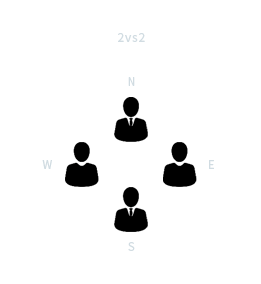
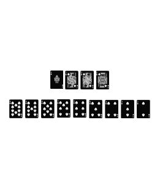

Poker
Blackjack
Baccarat
Joker seven
Trente Et Quarante
Joker seven
조커세븐은 슬롯게임의 한종류이다
기계공인 찰스가 발명했으며 릴3개와 다이아몬드.스페이드.하트. 심졸이 릴에 새겨져 있엇고 쪼개진 자유의종 이미지였었다
1963년에 현대적으로 바뀌었는데 전기로 작동하는 머니허니가 발명 되었다
1974년엔 Walt Freely가 "포츈 코인"을 개발하였다
전세계 사람들이 슬롯게임을 지금까지 즐기고있습니다
Joker seven
플레잉 카드를 이용한 카드 게임의 일종이다



Joker seven